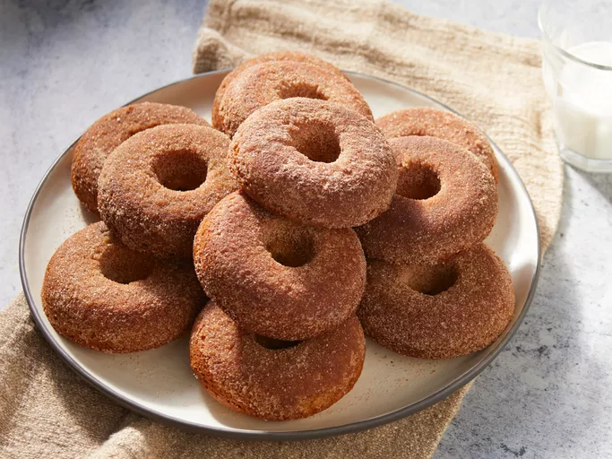

Home
Apple Cider Donuts Recipe

Description
Learn how to make an easy flavoured dish of donuts with fresh apple cider
Ingredients (12 servings)
- 2 cups fresh apple cider
- 2 cups all-purpose flour
- 3/4 teaspoon baking powder
- 3/4 teaspoon baking soda
- 1/4 teaspoon fine salt
- 1 teaspoon ground cinnamon
- 1 pinch freshly grated nutmeg
- 1/2 cup packed brown sugar
- 1/2 cup warm milk
- 6 tablespoons unsalted butter, melted, divided
- 3/4 teaspoon wanilla extract
- 1 large egg
Steps
- Preheat the oven to 375 degrees F (190 degrees C). Butter two 6-cup donut pans.
- Pour apple cider into a saucepan and place over medium heat. Bring to a simmer and let it cook, watching carefully, until the cider is reduced to 1/2 cup. If it reduces too much, add enough water to make 1/2 cup. Set aside until needed.
- Add flour, baking powder, baking soda, salt, 1 teaspoon cinnamon, cardamom, and nutmeg to a large bowl. Mix with a whisk until combined and set aside until needed.
- Whisk 1/2 cup white sugar, brown sugar, milk, 2 tablespoons melted butter, vanilla extract, and egg together in another bowl until combined. Add the apple cider reduction and the dry ingredients. Whisk together to form a slightly thick batter; do not overmix.
- Spoon or pipe the batter into the prepared donut pans, filling them about 3/4 of the way up.
- Bake in the center of the preheated oven until the tops are lightly browned, and the donuts spring back slightly to the touch, 10 to 12 minutes. Let cool for 10 minutes in the pans before removing to a sheet pan lined with a silicone baking mat. Cut out any donut holes as necessary.
- If desired, while still slightly warm, brush the donuts lightly with remaining melted butter.
- To make the coating: Mix 1 cup white sugar and 1 tablespoon cinnamon together in a shallow dish; toss donuts in sugar mixture to coat. Let cool completely before serving.